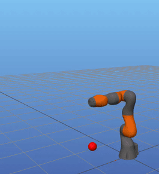
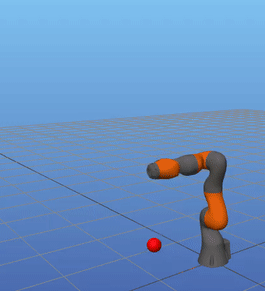

Ball-In-Cup With Robotic Arm

Ball-In-Cup With Robotic Arm

This is a motion-planning experiment to perform a "ball-in-cup" task using a seven-degree-of-freedom robotic arm. Unlike reinforcement-learning approaches for this task, I model the arm and the ball using discrete Lagrangian mechanics and use complementarity constraints to encode the impact imparted by the string that connects the end effector to the ball. I solve the resulting large nonlinear program with SNOPT.
My old scripts (needs work!) for generating the motion plan and animation is available here.